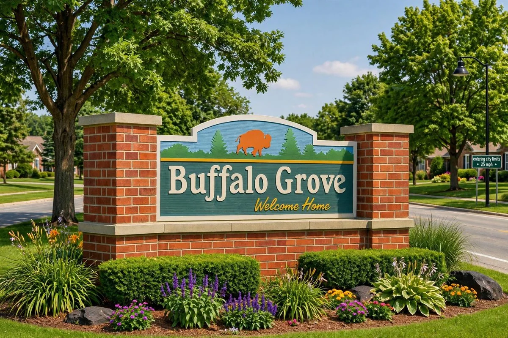

First Steps If a Pipe Bursts
- Turn off the main water supply if it is safe to do so.
- Stay out of areas where water may contact outlets, wiring, or appliances; seek qualified help for electrical hazards.
- Move belongings only if it is safe, note where water is appearing, and call to ask about local provider availability.
A burst water pipe can release enough water to damage walls, ceilings, floors, insulation, and personal belongings. Cold weather, corrosion, aging plumbing, high water pressure, or a failing connection can all contribute to a leak or rupture. This Buffalo Grove guide explains warning signs, first steps, and how to ask an independent local plumbing professional about repair options.
Emergency Burst Pipe Repair in Buffalo Grove, IL
If water is spreading through a kitchen, bathroom, basement, or another living area, shut off the main valve if safe and avoid wet electrical areas. Call to ask about connecting with an independent plumbing professional serving Buffalo Grove (ZIP 60089). The provider can confirm availability, inspect the affected plumbing, explain possible repairs, and discuss pricing directly with you before any work is authorized.
Common Causes of Burst Pipes in Buffalo Grove
Residential plumbing can leak or rupture for several reasons. Recognizing common risk factors may help homeowners decide when to arrange an inspection.
- Freezing temperatures: Water in exposed or poorly insulated pipes can freeze and expand, creating pressure that may crack a pipe.
- Aging plumbing: Older pipes and connections can deteriorate and become more prone to leaks.
- Corrosion: Some pipe materials weaken over time, eventually developing openings or cracks.
- High water pressure: Excess pressure can strain plumbing and already-weakened connections.
- Damaged connections: Worn fittings, loose joints, or installation problems may allow water to escape.
A qualified plumbing professional can assess the condition of a particular system and explain suitable next steps.
Warning Signs You May Need Water Pipe Leak Repair
Some leaks develop behind walls, beneath flooring, or in basement areas without causing obvious flooding. Look for warning signs such as:
- An unexpected increase in the water bill.
- Damp spots on walls, ceilings, or floors.
- Peeling paint or bubbling wallpaper.
- Musty odors in enclosed spaces.
- Water collecting around basement floors.
- A sudden reduction in water pressure.
- Dripping or running-water sounds when fixtures are off.
If you notice these symptoms, an independent local professional can help identify the source and discuss water pipe leak repair options before moisture causes further damage.
Frozen Pipe Repair and Winter Plumbing Protection
Pipes in unheated basements, crawl spaces, garages, and exterior walls can be vulnerable during Buffalo Grove winters. Water expands as it freezes, which can create pressure and crack a pipe. Damage may only become visible when temperatures rise and the ice begins to thaw.
To reduce freezing risks, insulate exposed pipes, seal gaps that let cold air in, maintain adequate indoor heat, and disconnect outdoor hoses before winter. If you suspect a frozen pipe, avoid open flames and unsafe heating equipment. Ask a qualified professional to assess whether the pipe is damaged and what repair options are appropriate.
Residential Burst Pipe Repair Options
Leaks and pipe failures can affect kitchens, bathrooms, laundry rooms, basements, and other parts of a home. After inspecting the affected plumbing, a professional may discuss options such as:
- Inspecting visible plumbing, connections, and fittings.
- Identifying the likely damaged pipe section.
- Repairing a leaking joint or replacing a damaged section.
- Testing the repaired area for leaks and checking water flow.
The right approach depends on the pipe material, location, accessibility, and extent of damage. Ask the provider to explain the proposed work, qualifications, availability, and costs before authorizing repairs.
Neighborhoods We Serve in Buffalo Grove
Our Buffalo Grove service-area information includes the neighborhoods below. An independent plumbing professional can confirm availability for your address.
Burst Pipe Repair in Strathmore
Homeowners in Strathmore may encounter plumbing issues involving exposed water lines, damaged connections, or leaks inside walls and basement areas. Dampness, ceiling marks, or an unexplained water-bill increase can be reasons to ask about an inspection.
Burst Pipe Repair in Old Farm Village
Water leaks can be difficult to spot when plumbing damage develops behind walls or beneath flooring. In Old Farm Village, pay attention to unexplained dampness, changes in water pressure, and unusual water bills; a professional can help assess suspected leaks.
Plumbing Services in Highland Grove
Unexplained moisture, dripping sounds, or reduced water pressure in Highland Grove may indicate a leaking pipe or connection. Note where symptoms appear so a plumbing professional can assess the source.
Pipe Repair in Cambridge on the Lake
Damp walls, ceiling stains, and basement moisture in Cambridge on the Lake are worth investigating promptly. Identifying the source of a leak helps determine what repair and cleanup may be needed.
Emergency Plumbing in Mill Creek
An unexpected pipe failure in Mill Creek can disrupt household activities. Shut off the main water supply if it is safe, stay away from wet electrical areas, and ask an independent provider about availability and an inspection.
Nearby Suburbs We Serve
Service-area information is also available for Wheeling, IL, Arlington Heights, IL, Lincolnshire, IL, Vernon Hills, IL, Long Grove, IL, and Riverwoods, IL. Each page covers local pipe-repair information for that community.
What to Expect When You Call
- Describe the plumbing issue, visible symptoms, and your Buffalo Grove location.
- Ask whether an independent local provider may be available for your address and timing.
- If connected, discuss the inspection and the condition of the affected plumbing with the provider.
- Ask about the proposed scope of work, provider qualifications, timing, and any costs.
- Decide whether to authorize work directly with the independent provider.
- Ask the provider what testing, cleanup, and follow-up may be appropriate.
Frequently Asked Questions About Burst Pipe Repair in Buffalo Grove
What should I do immediately after a pipe bursts?
Turn off the main water supply if it is safe, keep away from electrical hazards, protect belongings if safe, and call to ask about help.
How can I tell if a pipe is leaking behind a wall?
Damp spots, peeling paint, musty odors, unusual water bills, and dripping sounds may indicate a hidden plumbing leak.
Can freezing temperatures cause pipes to burst?
Yes. Water expands when it freezes, creating pressure that can crack or rupture a pipe.
How long does burst pipe repair take?
Timing depends on the location and extent of damage, pipe material, and accessibility. An independent provider can give you an estimate after assessing the problem.
Do you provide plumbing services in Buffalo Grove neighborhoods?
This website connects callers with independent local plumbing professionals. The provider confirms availability for your address and performs any authorized work.
Need Burst Pipe Repair in Buffalo Grove?
Call to discuss the issue and ask about availability from an independent local plumbing professional.
Call Now(224) 524-0772